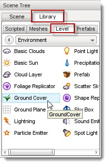
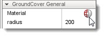
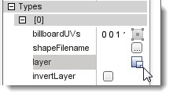
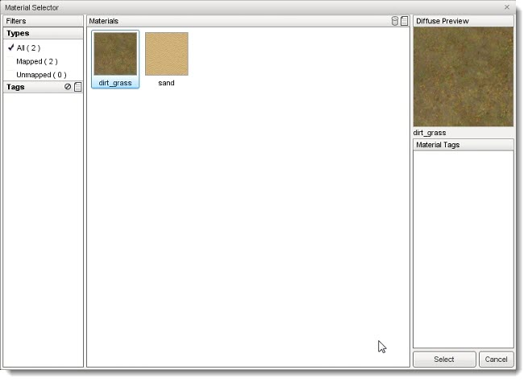
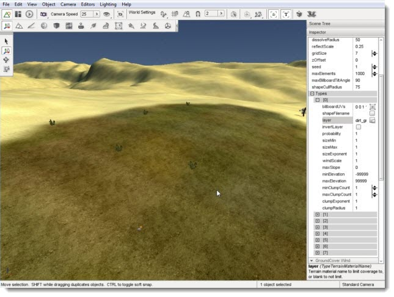
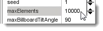

Introduction
The GroundCover system allows you to spread many objects throughout
your entire level. This object makes use of the Terrain Material
system, applying textures or 3D objects on a per-layer basis. The most
practical uses of GroundCover include:
- Creating large fields of foliage (grass, wheat, etc.)
- Automatic placement of shapes and environmental textures on specific terrain types.
- Providing another layer of environmental realism when combined with Forest Editor and Replicators.
Adding GroundCover
To add a ground Cover object to a level, select the Library tab in the Scene Tree panel. Click on the Level tab and double-click the Environment folder. Locate the GroundCover entry.

Double-click the GroundCover entry. The Create Object dialog will appear.

If you already have a material or shape you want to use, you can set them here. Materials are used to paint the ground with textures which can contain transparency so that the underlying ground shows through. A Shape File is used to replicate 3D objects on the ground. Enter a name for you GroundCover object then click the Create New button. A new GroundCover object will be added to your level. Without a material, the system will render a pattern on the ground with the default "No Material" texture:
(click to enlarge)

To change the No Material indicators to a real Material scroll through the GroundCover properties until you get to the
GroundCover General section. In the Material field, click on the globe to open the Material Selector:
Material Field

When the Material Selector appears, you have the option to pick an
existing material or create a new one in the Material Editor.
Assigning Terrain Material
When you first add a GroundCover object, it will place the material or shape on the entire terrain. To limit the placement of GroundCover, you must set the terrain layer. To set the terrain layer with the GroundCover selected, scroll down to the GroundCover General set of fields. Find the
Types sub-section.

Types is an array with each entry controlling a section of the GroundCover. If this is confusing, think of it like this as follows. The GroundCover is a single object that is covering the entire terrain. The object itself is comprised of eight sections, Types[0] through Types[7]. Each section can be told what, where, and how to render a material or shape. You can feasibly have the GroundCover object rendering simultaneously on eight different terrain layers.
With the above information in mind, you can assign the GroundCover to terrain materials. Scroll through the properties until you get to Types[0]. Click on the box icon in the layer field. The Material Selector for terrains should appear. Select a material such as the dirt_grass shown here:
(click to enlarge)

After you click the Select button, the GroundCover
will stop placing billboards on the entire terrain. It should now only
be placing the foliage on the specific terrain layer you chose.
(click to enlarge)

If you are having a difficult seeing this change, locate the maxElements field and increase the value dramatically:

Conclusion
The GroundCover object can add an immense amount of ambience to your
level. It is one of the most powerful and flexible Torque 3D objects,
so you should definitely take the time to continue experimenting with
it. Try different types of settings, art, and level arrangements.
Read through the Adding Foliage Tutorial for a full walkthrough on using GroundCover to create multiple types of foliage.
|
{kind=link}
{kind=link}